|
|
| green seaweeds text index | photo index |
| Seaweeds > Division Chlorophyta |
| Hairy
green seaweed Bryopsis sp.* Family Bryopsidaceae updated Oct 2016
Where seen? This green seaweed is commonly seen on many of our shores, attached to coral rubble. Sometimes in small clumps on sandy areas too. It seems to be seasonally abundant, especially on our Southern shores. At times, vast areas of the intertidal zone may be blanketed in a thick green carpet of this seaweed which disappear after a few weeks. These blooms are suspected to be related to high nutrient concentrations. It is reported that this seaweed can tolerate low salinities. Features: A clump of fine filaments (6-8cm long) attached to a hard surface, such as small stones and coral rubble. In some, the filaments form long feather-like structures that taper at the tips. In others, the filaments are long, single strands with only a little bit of branching. Various shades of green, from bluish green to olive green. According to AlgaeBase there are more than 60 current Bryopsis species. Sometimes confused with similar green seaweeds such as Turf green seaweeds (Enteromorpha sp.) and small turfing species of Cladophoropsis. Role in the habitat: Although some Bryopsis species produces chemicals to defend against herbivores, when hairy green seaweeds are abundant on the shores, there is also an abundance of some sea slugs such as the Leaf slug (Elysia ornata) and tiny Bryopsis slugs (Placida dendritica).These sap-sucking slugs probably eat the seaweed. Sometimes, the seaweed is thick with tiny little beachfleas (Order Amphipoda). We have also seen the Giant reef worm (Eunice aphroditois) snatching this seaweed back to its lair. |
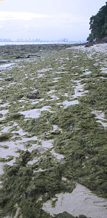 Seasonally may bloom, covering the shore in a thick furry blanket. Sentosa, Nov 10 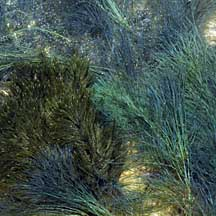 Hairy green seaweeds of different structures may be seen together. Sentosa, Nov 10 |
|
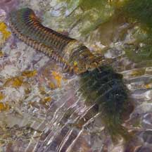 A Giant reef worm snatching a mouthful of seaweed back into its lair. Sisters Island, Apr 04 |
`
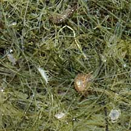 Lots of tiny creatures are often seen on this seaweed. Sentosa, Nov 09 |
|
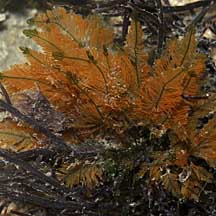 Sometimes parts may be orange. Chek Jawa, Jul 08 |
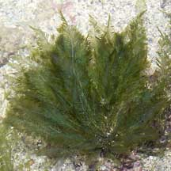 Sentosa, Jan 06 |
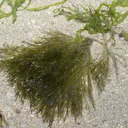 Changi, Jun 05 |
*Species are difficult to positively identify without close examination of internal parts.
On this website, they are grouped by external features for convenience of display.
| Hairy green seaweed on Singapore shores |
| Photos of Hairy green seaweeds for free download from wildsingapore flickr |
| Distribution in Singapore on this wildsingapore flickr map |
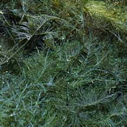 Terumbu Salu, Jan 10 |
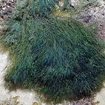 Pulau Salu, Aug 10 |
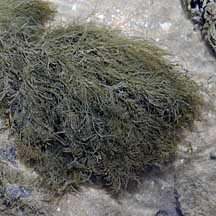 Pulau Pawai, Dec 09 |
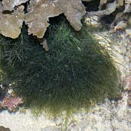 Pulau Senang, Aug 10 |
| Bryopsis
recorded for Singapore Pham, M. N., H. T. W. Tan, S. Mitrovic & H. H. T. Yeo, 2011. A Checklist of the Algae of Singapore.
|
Links
|
|
|